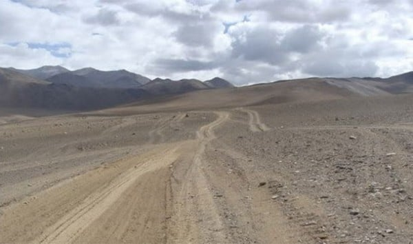

Animaux :
- Étant le plus rapide
- Le plus rapide dans les airs
- Le plus rapide en mer
- Étant le plus long
- Le plus mortel
- Ayant le plus gros cerveau
- Étant le plus fort
- Étant le plus lourd
- Sautant le plus loin
- Parcourant le plus de distance dans sa vie
- Ayant le plus long pénis par rapport à sa taille
- Avec la piqûre la plus douloureuse
- Ayant les plus grands yeux
- La plus longue durée de vie
- Volant le plus longtemps
Nature :
- Record du col de montagne le plus élevée
- Record de la route la plus haute
- Record de l'endroit habité le plus froid
- Record de la mine la plus profonde
- Record du point sur la terre le plus profond
- Record de la plus épaisse couche de glace
- Record de l'endroit ou les températures sont les plus basses
- Record de la terre la plus septentrionale du monde
- Record de l'endroit habité le plus chaud
- Record de les parois rocheuse les plus grandes
- Record de la cavité naturelle la plus profonde
- Record de l'endroit habité le plus isolé de la planète
- Record de l'endroit avec la température la plus chaude
- Record de la ville la plus haute du monde
- Record de l'endroit le plus sec
Sport :
- Record du tour monde en 45 jours
- Record du plus haut saut à la perche
- Record de médailles olympiques en natation
- Record du plus grand gagnant du Tour de France
- Record du plus rapide sur 100 et sur 200 mètres
- Record du nombre de buts inscrit en une année
- Record de buts en liga
- Record sur 400 mètres
- Record de points marqué durant sa carrière
- 5 Champions Leagues consécutifs
- Record de victoire en une saison NBA
- 5 buts en 9 minutes
- Record de trophée au football en tout
- un but à 91,9 mètres
- 1500 mètres dame en 3 min 50 s 07
Particularités :
- La plus grande bouche
- Record des ongles les plus long du monde
- Le plus long nez au monde
- L'homme le plus tatoué, Lucky Diamond Rich
- Les plus longs cheveux du monde
- Les plus longs poils d’oreilles
- La plus grande langue
- La plus longue barbe
- Les plus grands globes oculaires
- Les plus longues jambes
- Les plus gros biceps du monde
- La femme la plus petite du monde
- La taille la plus fine du monde
- La fille la plus poilue du monde
- La plus grosse poitrine naturelle du monde
Insolite :
- Record des plus grosses paire de cornes
- Record du plus jeune DJ de club
- Record du plus grand nombre de rubiks cube résolu
- Record de l'œuvre vendue la plus chère aux enchères
- Record du plus long séjour au sommet d'un mât
- Record de la plus grande moto pilotable
- Record du nombre de buts marqué par un joueur au mondial de football
- Record de la plus grande réplique de décor en Lego
- Record: la « vampire mexicaine »
- Record du youtuber le mieux payé au monde
- Record: cimetière de Wadi al-Salaam
- Record de la plus jeune personne à avoir fusionné 2 atomes de deutérium
- Record du plus grand orchestre
- Record de la plus jeune femme à barbe
- Record de la plus veille personne a faire un saut en parachute
Célébrité :
- Jennifer Aniston
- Cristiano Ronaldo
- Ariana Grande
- Eminem
- Ellen DeGeneres
- Jennifer Lawrence
- Justin Bieber
- Taylor Swift
- Alex Rodriguez
- Jackie Chan
- Dolly Parton
- Katy Perry
- Ed Sheeran
- Sam Smith
- Hiroyuki Terada
Jeux Vidéos
- Un salaire conséquent
- Un budget digne d'un film d'hollywood
- Un succés Mondial
- une partie de jeu vidéo de 572h
- Une partie de JOUST en version arcade
- 138h et 34 secondes de JUST DANCE 2015
- Du Call Of Duty pendant des heures
- La collection ultime
- Un rassemblement pour la bonne cause
- Un score à 19 chifffres sur GIGA WING 2
- 169 Victoires d'affilées sur STREET FIGHTER IV
- Super Mario Bros. en moins de 5min
- Speedrun de GTA, 53 MINUTES ET 29 SECONDES PAR MHMD_FVC
- Speedrun de SUPER MEAT BOY,17 MINUTES ET 43 SECONDES PAR VORPAL
- Speedrun de SKYRIM, 35 MINUTES ET 20 SECONDES PAR I_NEED_A_DOCTOR
- Speedrun de DOOM 2 : HELL ON EARTH, 19 MINUTES ET 59 SECONDES PAR ZERO-MASTER
- Speedrun de DISHONORED, 33 MINUTES ET 59 SECONDES PAR MRWALRUS
- Speedrun de PORTAL 1, 7 MINUTES ET 54 SECONDES PAR IMANEX
- Speedrun de ZELDA : OCARINA OF TIME, 17 MINUTES ET 45 SECONDES PAR SKATER82297
- Speedrun de HALF-LIFE, 20 MINUTES ET 41 SECONDES PAR QUADRAZID
Record Nature
Marsimik La en Inde : le col de montagne le plus élevée :
le col de Marsimik La en Inde qui culmine à 5582 mètres, est considéré comme la route toujours en fonction la plus haute du monde
Route de la mine Aucanquilcha : la route la plus haute :
Pour se rendre à la mine de ce volcan chilien, il fallait prendre cette route située à 6000 mètres d’altitude jusque dans les années 90.

Oïmiakon en Russie : l’endroit habité le plus froid :
A Oïmiakon, un petit village russe de 512 habitants, les températures peuvent atteindre -67°C au mois de janvier.
La moyenne pour ce mois est de -46°C.
Mine Tau Tona : la mine la plus profonde :
Cette mine d’or d’Afrique du Sud est le point le plus profond dans lequel l’Homme peut se rendre.
Il y a tout de même près de 4 km de profondeur
Forage sg3 de Kola : le point le plus profond :
Bien qu’il ait été créé artificiellement, ce projet scientifique russe avait pour but de percer le plus profondément possible la croûte terrestre.
Le forage a atteint plus de 12 km
Fosse subglaciale de Bentley : la plus épaisse couche de glace :
Également située en Antarctique, la glace a ici une épaisseur de 2,5 km. En fait, la terre sur laquelle la glace repose est bien en dessous du niveau de la mer.
C’est ainsi le point le plus bas sur Terre à ne pas être recouvert par l’océan.
Base antarctique Vostok : l’endroit où les températures sont les plus basses :
Le point le plus froid du globe se trouve sur la base de Vostok, en Antarctique. C’est ici qu’a été relevée en août 2010 la température extrême de -93,2°C.
Cela fait partie des nombreux records météorologiques sur notre planète.
L’île de Kaffeklubben : la terre la plus septentrionale du monde :
Appartenant au Groenland, cette île est officiellement considérée comme le point le plus au nord sur Terre.
Il y a, cependant, plusieurs bancs de gravier que l’on retrouvent plus au nord encore…
Dallol : L’endroit habité le plus chaud :
La région habitée la plus chaude au monde se trouve en Ethiopie. Ce sont les Afars qui habitent autour du cratère de ce volcan pour récolter du sel.
On relève à Dallol une chaleur de 45°C à l’ombre.
Mont Thor : les parois rocheuses verticales les plus grandes :
Situé au Canada, le mont Thor possède une chute verticale de 1250 mètres (105°)
malgré sa situation extrêmement éloignée dans la toundra gelée des provinces du nord du Canada, c’est une destination d’escalade très populaire.
Krubera-Voronja : la cavité naturelle la plus profonde :
Profonde de 2197 mètres, cette faille terrestre (ou gouffre) appelée Krubera-Voronja est située en Géorgie
Tristan da Cunha : l’endroit habité le plus isolé de la planète :
A des milliers de kilomètres à la fois de l’Afrique du Sud et de l’Amérique du Sud, ce petit archipel dans l’océan Atlantique a une population de seulement 271 personnes.
Il faut 7 jours de mer depuis l’Afrique du Sud pour rejoindre l’île le plus rapidement.
Le courrier n’arrive ainsi que quelques fois dans l’année.
Vallée de la Mort : la température la plus chaude :
Avec une température enregistrée à près de 57°C, la Death Valley en Californie (ou Vallée de la Mort) est l’endroit le plus chaud sur Terre.

La Rinconada : la ville haute du monde :
Située au Pérou, cette ville minière est la ville habitée la plus haute au monde, avec 5100 mètres d’altitude.
Un européen, par exemple, ne serait pas en mesure de s’adapter aux conditions. La ville produit 2 à 10 tonnes d’or par an.
Désert d’Atacama : l’endroit le plus sec :
Il existe un point au milieu du désert d’Atacama, au Chili, où la pluie n’a jamais été enregistrée par les scientifiques. Ces derniers surnomment cette région le « désert absolu ».
C’est ici que la NASA teste ses robots avant de les envoyer sur Mars.